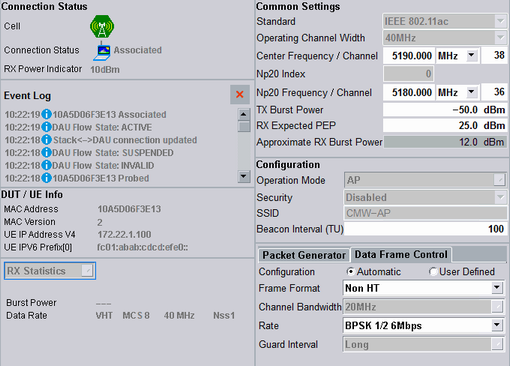

In its left part, the signaling view displays status information. The most important settings are configurable in the right part.

For descriptions of the individual areas of the view, refer to the subsections.